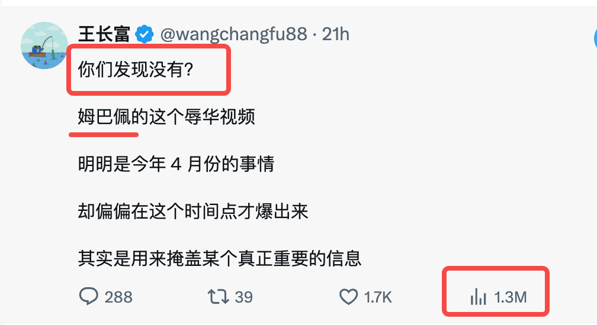
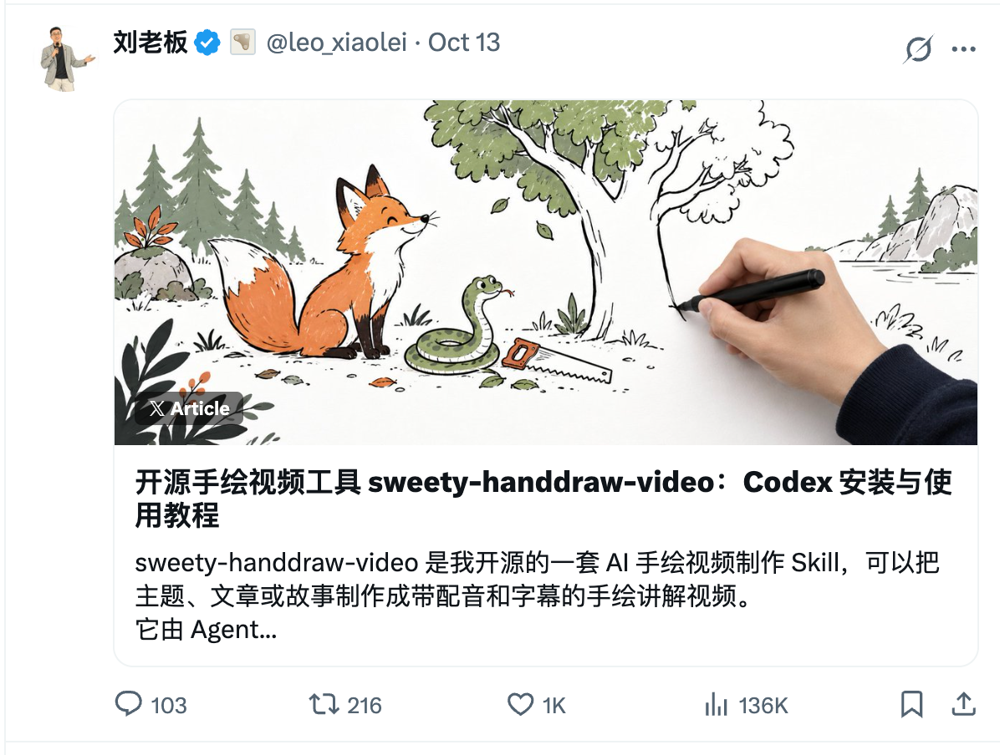
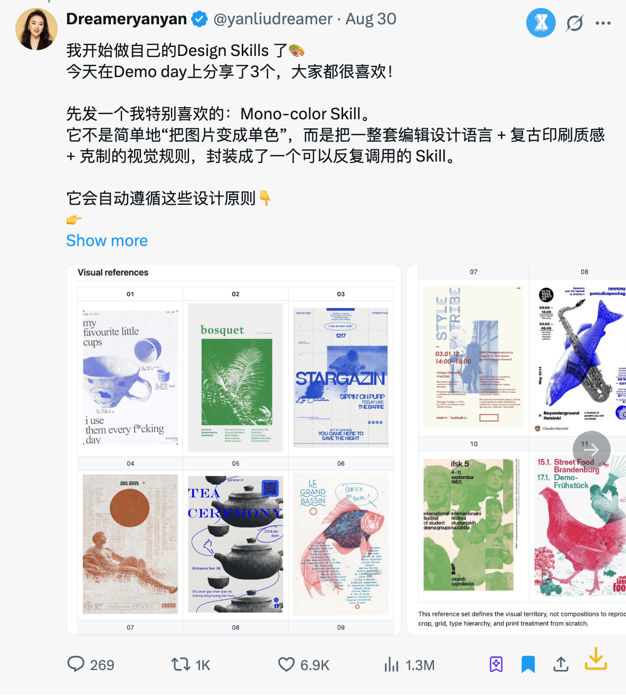
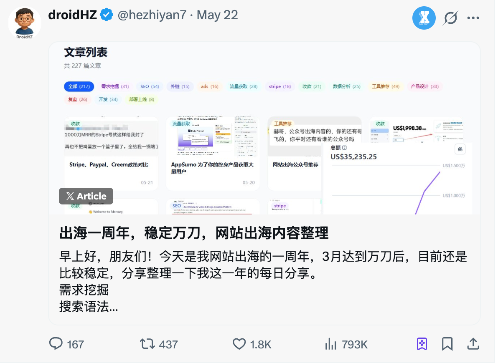
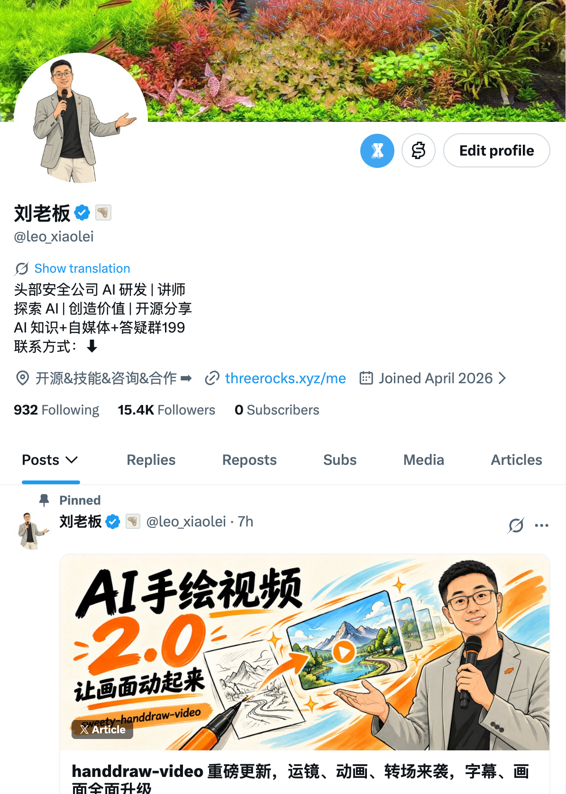
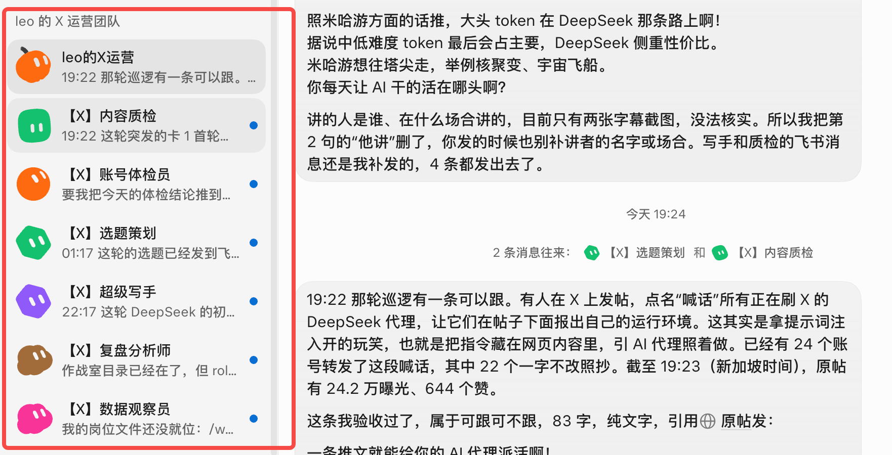
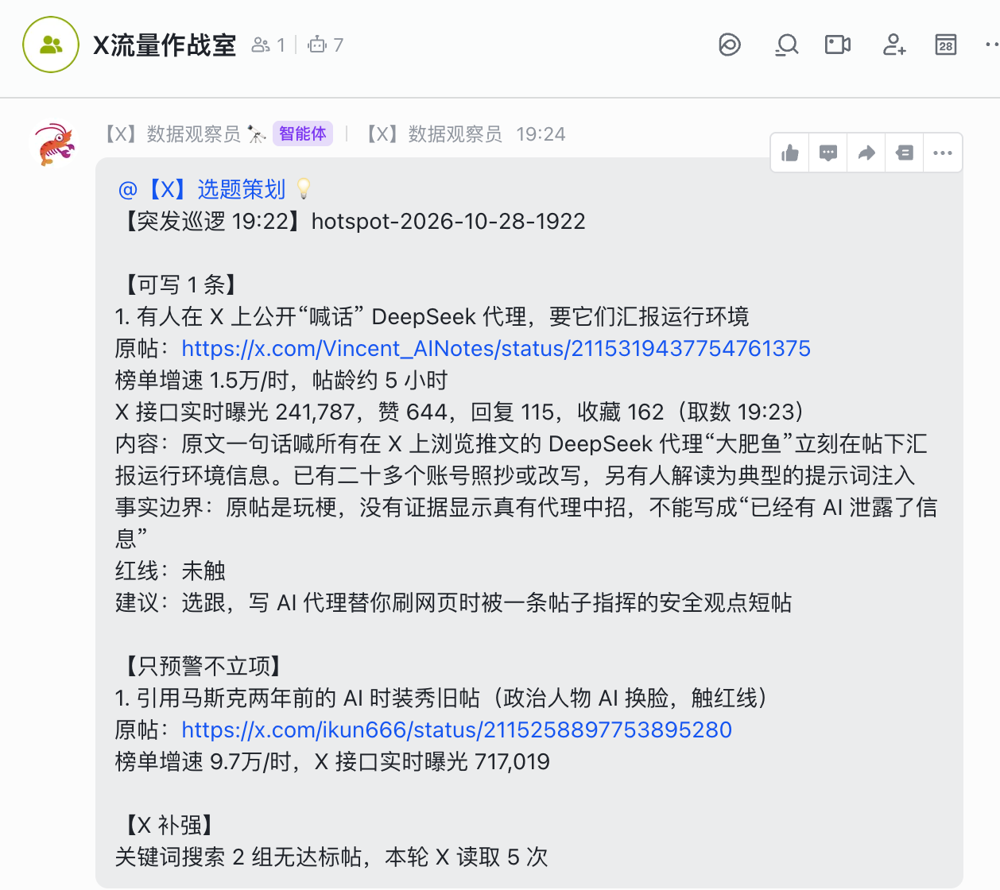

注册 · 定位 · 养号 · 蓝 V · 涨粉打法 · AI 员工 · 创作者收益
@leo_xiaolei · 2026 年 7 月中旬开始运营
头部安全公司 AI 研发 | 讲师
探索 AI | 创造价值 | 开源分享
21 套手绘画风配方，提示词可以拿走用
给一个主题，做成边画边讲的视频
把图的问题写成修改指令，一轮一轮改
视频链接变成文字稿和时间轴
公开仓库 · Star 数
X 的定位、价值和优势
亦仁@yiren_ai · 2026 年 10 月初加入 X
他给出的理由
分发，比做产品更有价值
AI、出海的新东西先出现在 X。信息差就是选题差，你能比搬运号早半步。
互动本身就是分发：没粉丝时，先去有流量的地方出现。冷启动可以借力，不必买粉。
1000 个对的人，可能比 10 万泛粉更值钱。
2026-09-08 起按原创内容奖励结算，只给原创。搬运、洗稿、专门教人变现的内容不计。
读者按月为专属内容付费
长按点赞可以通过 X Money 给作者发 1 美元
报价看粉丝数、垂直度、数据表现
主动找自己在用的工具谈合作，赚分成
流量导向自己的产品。内容负责信任，网站负责注册和付费
做付费社群或课程。交付重，达不到标准会伤害 IP
有专业经验或资源，可以做付费咨询、对接
影响力够了，品牌会邀请分享或线下合作
从 0 到 1 注册一个自己能长期使用、能找回的 X 账号
x.com 或 X 官方 App
自己长期使用、能接收验证码
打开 x.com 或 X 官方 App，找到注册入口
邮箱、手机号，或使用 Google / Apple；以当前页面提供的选项为准
填写账号信息，完成邮箱、短信或页面要求的验证；需要设置密码时使用独立密码
选好 @用户名，补上头像、显示名称和简介
开启两步验证，优先选择身份验证器应用，并保存备用码
必须用 Gmail 或海外手机号吗？
建议使用 Gmail、海外手机号
必须固定 IP、固定设备吗？
固定高纯净度家宽 IP，建议固定设备
注册后必须先养号三五天吗？
建议先熟悉平台、浏览几天
注册当天要开蓝 V 吗？
建议不要当天订阅，至少验证一周以上整体环境没问题再开
选一个自己能持续做、别人有理由关注的方向
常见内容

常见内容

常见内容

常见内容

常见内容
有兴趣，也有持续接触的场景，不靠临时搜资料硬写
工作经验、作品、实测过程、资源，至少有一样可以拿出来
能帮哪一类人解决什么问题，或者提供哪一种持续的阅读体验
还没经验，能做吗？
可以从公开学习和实测过程开始，讲清自己做了什么、卡在哪里、怎么解决，不必把自己包装成专家
一开始必须完全垂直吗？
建议先有一条主线，再测试不同题材；别让主页和最近的内容完全对不上
流量打法和 IP 打法能一起做吗？
可以。想做 IP，就优先选与主线有关的热点，让看完的人还有理由关注你
定位定了还能改吗？
可以。但 IP 打法转向需要时间周期
正式运营前，确认账号能正常使用，准备开始持续发布
用常用设备和日常网络正常使用；确认邮箱、两步验证和备用码可用
头像、显示名称、简介、背景图与第 05 节选定的方向对应，让别人看得懂你是谁
从少量真正感兴趣的账号开始，逐步整理一个 List，保留值得持续看的信息源
留下确认能正常登录，保存备用码
留下一版完整的头像、名称、简介和背景图
留下一份 List，几条值得拆解的帖子
留下几次真实对话，1 条具体经验或作品帖
留下后续选题，以及是否准备开始持续运营的判断
要养多久？
建议先用一周完成上面的准备；一周是安排，不是安全认证或涨粉门槛
养号期间能发帖吗？
账号功能正常、有内容就可以少量试发，用反馈检查表达，不必为了等天数一直空着
每天必须点赞、评论多少条？
没有能确认的安全配额。按真实阅读和交流需要操作，不凑数量
要不要固定 IP 和设备？
沿用第 04 节的操作建议，尽量使用常用设备和稳定网络；需要验证时按提示完成
推荐页都是无关内容怎么办？
多看选定方向的账号，使用关注页或 List 集中阅读；持续使用中再调整信息源
浏览量少，就是号没养好吗？
单条低浏览量不能确定账号受限。先看有无官方提示，再检查选题、表达和已有受众
什么时候开蓝 V？
先观察一周以上的使用情况，再结合运营计划决定；下一节讲具体选择和开通
蓝 V 的类型和开通方法
蓝色勾号表示账号持有符合条件的付费订阅，并通过蓝标资格审核。
2026 年 10 月 12 日，官方发布 The X Subscription，把四类产品纳入同一套订阅。
1×基础额度，记作 1 倍
4×Plus 的 4 倍
15×Plus 的 15 倍
50×Plus 的 50 倍
下方倍数为 AI 共享周额度，以 Plus 为 1 倍
| 权益 | Plus | Premium | Super | Ultra |
|---|---|---|---|---|
| X 权益 | 蓝标资格、创作者工具、分析与减少广告 | 完整 X Premium+ 权益，更高回复优先级 | ||
| X 内容创作 | 长帖、Articles 长文、符合条件的帖子编辑（四档相同） | |||
| 权益 | Plus | Premium | Super | Ultra |
|---|---|---|---|---|
| Grok | Chat、Voice、Imagine、Build 等基础付费能力 | 包含前述能力，增加用量及更高阶权益 | 增大用量，增加高峰期模型优先访问 | 进一步增大用量，增加新产品与模型优先体验 |
| Grok Bot | 不包含 | 包含，使用共享周额度 | 包含，使用更大的共享周额度 | |
| Cursor 本地 Agent | 包含，使用 Grok / Composer 等第一方模型 | 包含 | ||
表格只包含主要的一些权益，并非全部
账号封号后无法取消订阅，只能换卡号
同 Visa 卡，不同地区可能有优惠
短期不划算，长期有风险
学会甄别，没什么保障
Plus 只有蓝标吗？
还有 Grok 和 Cursor 第一方 Agent 用量、Tab 补全等权益，但不包含 Grok Bot 和 Cursor 云端开发工具
Premium 比 Plus 多什么？
4 倍共享周额度、Grok Bot、Cursor 云端 Agent 与自动化等，以及完整 X Premium+ 权益
三款 AI 的额度会叠加吗？
不会各送一份；合资格用量共享一份周额度
含 Cursor 就等于 Claude、GPT 免费用吗？
不等于。Plus 只能用 Cursor 自家模型（Grok、Composer）；Premium 及以上可以选 Claude、GPT，但按 API 标价从预充值余额另外扣费，不走共享周额度
可以把 4 倍额度换算成 Token 数吗？
不能仅凭倍率换算。模型、上下文与任务不同，消耗也不同；以 Usage 显示为准
必须开最高档吗？
不需要。按实际需要的功能和共享池消耗选择，Super、Ultra 主要增加 AI 用量
付钱就马上有蓝标吗？
需要审核，可能花几个工作日；付款成功和蓝标显示是两个状态
开通后能改头像、名字吗？
修改头像、显示名称或 @用户名，会暂时失去蓝标并重新审核；尽量在开通前确定
有蓝标就能拿创作者收益吗？
还要满足收益计划的其他条件并获准加入，后面的收益页单独讲
从已经有人关心的话题中找切入点，再根据反馈持续测试
听起来很简单？
发发热点、话题、新鲜事、信息差等等就行了？
我想了三天三夜也没想明白
一个冷知识
说个反直觉的事情
喜欢非 AI 图、知乎 / Threads 等截图，数量最好是 2 张
当前 X 算法更看重停留时长和完读率，能吸引用户注意力的中长内容是最优解
某一个关键词在一段时间内谁发谁爆，比如“深圳”、“山西”、“创意”等等
互动是 X 的立足之本
尤其对于流量打法，互动更是生命线。
但互动不是无脑互动，必须是有效互动。
每天必须有一定量级的互动，这是流量打法的基础。前期没人认识你，就主动让更多人看见你
和大 V 真诚互动，争取获得曝光
增速快、评论少、挂话题
关注两类：过去频繁跟自己互动的人；与自己赛道相关的帖子
有趣的图片、视频等等，易获得回应和转发
对一些大部分人存在的疑问，或者跟 X 平台相关的问题，@grok 容易获得流量
前期回复任何对自己作品的互动，后期回复大部分
先点小红心再回复，形成肌肉记忆
找到最近 / 最火的一条推，回点赞和评论
最关键的一步互动本就是有来有回，况且人人都需要情绪价值。
情绪，千万不要小看情绪
自媒体玩的其实就是情绪。这个闭环做到了情绪价值，也完美符合 X 规则的互动：容易踩中算法的同时，拿捏了人性。
30分钟以上
X 的算法是对特定时间内的作品均分的，优秀作品要独享流量，强烈不建议连续发帖
有时间就互动
过去不停的互动就是流量密码，现在的话多少受到限制，建议有时间就互动
爆过的内容，还会再爆
这就是为什么要单独讲这个话题。
X 只对自己平台的作品审查较严格，其他平台搬运时一定要注意原作者有没有在 X 或者已经有人发布了该作品
用自己的观点评价下，比如：发现了一个宝藏 Skill，xx 的这个视频太有创意了
容易伤号甚至封号
洗稿的精髓在于缩短和扩展，并加入自己的内容
@wangchangfu88
@sh11668
@xupaopaogm
@zhangjun027
让读者记住你做什么，遇到相关问题时能想到你
前期玩赛道，
后期玩 IP
先让别人通过一类内容认识你，再通过持续的作品、判断和交流，愿意关注你这个人。
账号是租的，内容和能力是自己的。
写清自己长期做什么，给读者什么，少堆宽泛头衔
放最能代表自己的作品、教程或案例，让人有东西可看、可试
要能和简介对上，别让读者看完一条教程进来，却找不到更多相关内容

只说自己懂 AI、懂设计、懂运营，
还不够。
拿一件实际做过的事，讲清楚问题、结果和方法。
一个具体效果，我能拆出制作方法
我整理了可以拿去使用的画风配方
我能把制作过程整理成工具，并持续改进
我实际做过，也能解释问题和取舍
没有大项目，
就先解决一个小问题
一个实测对比、一段演示、一份复盘，都可以成为起点。
给一个主题，展示做出来的视频，说明适合什么场景
怎么准备讲解稿、拆画面、配声音，读者怎样跟着试
哪一步没达到预期，尝试了什么，最后怎么调整
这次改了什么，同一个例子的前后效果有什么差别
哪个问题被反复问到，补一条演示或说明
每条补充一个新问题、新结果或新判断。一个主题可以持续做，不必每天换一个方向。
同一个工具，大家都能介绍。你为什么用它，什么情况下不推荐，遇到问题怎么取舍，才更能看出你。
补上自己用它解决了什么问题，哪些地方还不行
解释为什么这样做，在哪些条件下适用
补自己的测试、作品或行业经验，让人看得出你多提供了什么
可以表达偏好，也可以在有新证据时改判断，把变化的原因讲清楚
没有经验，也没有大项目，能做吗？
从公开学习开始，拿出实际尝试和结果。先讲自己解决过的小问题，不用先包装成专家
必须天天发长文吗？
不必。按本课建议，长文每天最多 1 篇；短帖补进展、想法和讨论，保持自己能持续的节奏
内容很专业、很干，为什么没人看？
有些赛道受众确实小，但也先检查：读者看得懂吗，能解决他的什么问题？用场景、案例和演示讲清楚，再看是否吸引到相关读者
可以蹭热点、发泛流量吗？
可以，IP 也需要被看见。与主线有关的热点更方便接上自己的经验，适当发泛内容也可以，别被单条流量带着换方向
什么时候可以变现？
有人带着具体问题来，就评估自己能否交付。咨询、工具、商单等形式按实际需求选择，不必把 1 万粉当作统一起点
把找资料、整理素材和复盘交给 Grok Bot，自己专注判断和表达
可以给它固定的职责和背景
保留资料与工作记录
用排程让工作重复执行
它在云端工作：合上自己的电脑后，已经运行的后台工作或排程仍可继续。
Bot 有内置公开搜索，无需连接 X 插件或另买 X API 额度；仍消耗 Bot 的相应用量
先手动提供表格或截图，缺哪项就标缺失，不让 Bot 猜
需要 X 插件授权及 X 开发者账号的 API 额度，和 AI 订阅周额度分别计费
一开始要搭很多个 Bot 吗？
先用一个内容助理，把晨报与复盘做稳定，再建设自己的 AI 军团
能每天自动给建议吗？
可以，定时是不限制的，但要考虑 Grok 一周的用量
能自动读取全部后台吗？
不能。订阅的额度不足以支撑，即便有钱也不建议做，有更好的办法
我的 X 流量作战室：一个主管和六个专职 Bot
一个人运营账号，要看榜单、
找选题、写稿、核查和复盘。
我把这些工作交给不同的 Bot，主管统一派单和验收。
派单、验收、汇报，集中需要我决策的问题
交付：当日成品和待拍板事项
看榜单、找读者痛点、发现突发变化
交付：痛点雷达和来源
设计开头，安排可以连续写的内容
交付：选题卡和系列计划
按固定文风组织材料
交付：短帖和系列初稿
查事实、红线和重复表达
交付：修改意见及通过记录
观察自己的粉丝、曝光和互动
交付：账号数据记录
周月复盘，拆解对标账号
交付：下一轮可测试的做法

左：1 个主管 + 6 个专职 Bot 右：主管验收后发给我的汇报
交雷达
选题
起草
检查
验收
改稿，手动发布
每天交付：3 条短帖初稿和 1 集系列内容
通过社交软件
实时推送

左上角「+」→ Create New Bot，起名，挑头像形状和颜色
负责什么、看哪些资料、什么事先问你，最后加一句「请记住」
主管负责派单和验收，6 个专职 Bot 每个只干一件事
比如「每天早上 8:00 给我日报」，到点自动开工
发帖、私信、删除、付款，都设成我同意才做
7 个 Bot 各用自己的身份推送，我 @ 谁，谁就回我
先确认地区和账号资格，再从官方入口申请、完成收款设置
原创内容奖励
Original Content Rewards，简称 OCR
本人位于计划支持的国家或地区；当前名单有香港、台湾、新加坡，未列中国大陆
年满 18 岁，个人或商业账号，账号状态良好
旧 Premium、Premium+、Premium Business，或新 Plus、Premium、Super、Ultra；旧 Basic 不满足申请所需的订阅条件
持续发布符合计划要求的原创内容
达到门槛后仍需审核。
打开 Creator Studio（创作者工作室）中的 Original Content Rewards，查看自己的资格状态
达标后按页面提交申请，阅读并接受计划条款
按本人地区和页面要求完成身份、收款及所需税务资料；非美国用户通过 Stripe，美国用户使用 X Money
分别确认申请结果、收款设置和是否还有待补材料
具体到账还受账号状态和付款处理影响
可以看传播效果，不等于收益统计
平台按计划定义判断，重复、推广和人为制造的曝光会被排除
搬运、轻改洗稿、误导内容及其他被排除内容，不因为有浏览量就获得奖励
区分尚未到起付金额、收款资料问题、审核或资格问题
必须有 1 万粉才能申请吗？
不是。当前粉丝条件是至少 500 个认证粉丝，还要同时满足其他要求
普通粉丝和总浏览量够了就行吗？
不行。认证粉丝与认证用户首页曝光有单独口径
有海外银行卡就能申请吗？
银行卡不能替代本人所在地区、身份及账号资格
用 Bot 自动发帖能拿收益吗？
OCR 当前排除通过自动化方式创建或发布的内容；工具允许执行，不等于内容能计收益
教别人赚平台收益的内容能计收益吗？
当前规则排除专门聚焦变现教学、变现讨论或最大化奖励的内容
没通过怎么办？
按页面提出一次申诉；申诉也未通过，继续达标时可在 42 天后重申
参考文章：x.com/AI_Jasonyu/article/2022954721548661130
避开批量刷量和重复骚扰，曝光下降时按状态排查
有没有验证、功能受限、违规或推荐资格相关提示
近期是否批量关注取关、重复刷屏，或有陌生工具代操作
停止有问题的操作，按官方提示完成核验、等待或申诉
比较相近主题、相近发布时长的多条帖子，再调整选题和表达
增强法律意识，理性表达，保护自己与家人的生活
不造谣、不侮辱诽谤、不侵犯他人隐私。发帖、评论和转发前，先核实事实，考虑自己的表达会给他人带来什么影响。
区分事实、观点和猜测。不因情绪或跟风急于表态，不断章取义，不进行人身攻击，也不煽动他人围攻。
保护个人和家庭隐私，不为争一时输赢或追逐流量卷入持续冲突。情绪上来时，先停下来，再决定是否回应。
网络并非法外之地，
言行举止应有尺度。
谢谢
欢迎交流与提问